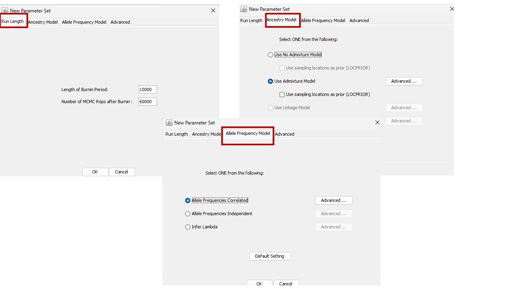

STRUCTURE
To use the software Structure, it’s necessary to convert the sequences into a binary format. For this purpose, we will utilize the fasta2structure software. Download link: https://github.com/AdamBessa/Fasta2Structure/tree/main/Fasta2Structure_W
Copy the entire sequence, paste it into a text editor like Notepad, and save it with the extension .str.
Now that the input file is ready, let’s download Structure. Download from the link: https://web.stanford.edu/group/pritchardlab/structure_software/release_versions/v2.3.4/html/structure.html
Open the Software, click on File, and select New project
1º Define the project name , directory, and select the dataset to be use.
2º Specify the number of individuals; in this example, I’ve entered 59 because I have 59 isolates. Ploidy is 1 because it’s haploid, and there are 247 loci. How do I define this? When I performed AMOVA in R, it displayed the number of individuals and loci. The missing datas are represented by -9 because in fasta2structure, missing data is coded as -9.
3º The selection of what to mark depends on how you have organized your data. In my case, I do not have any additional information to provide, so I did not mark anything.
4º I marked the individual ID because, as seen in the data input, each ID is followed by its corresponding sequence. If there is a value preceding the sequence that indicates subpopulation information, select it if there is information available on putative population.
After that, click on Parameter set > New
There are two issues to worry about: (1) burnin length: how long to run the simulation before collecting data to minimize the effect of the starting configuration, and (2) how long to run the simulation after the burnin to get accurate parameter estimates.
Next, define the length of the burning period, which is the initial phase of the simulation where results are not yet stable and do not reflect the desired distribution. The chosen value indicates how many of these initial iterations will be discarded. Typically, at least 10,000 are chosen. In practice your run length may be determined by your computer speed and patience as much as anything else. If you are dealing with extremely large data sets and are frustrated with the run times, you might try trimming both the length of the runs, and the number of markers/individuals, at least for exploratory analyses.
The choices for the next sessions depend on the researcher’s objectives. In this example, I am selecting the admixture model because I want to analyze genetic admixture. Correlated allele frequencies have also been chosen because a single species is being analyzed, thus it is expected that their allele frequencies are correlated.

After that, click OK and assign a name to the project as prompted. Then, click on Project at the top of the software, followed by Start a job . The window below will open.
Select the project you just named, then set the number of K. I chose from 1 to 10; if the maximum K number is obtained in my results, I will test again from 1 to 15… Ensure the number of iterations is at least 20. It will simulate 20 times for K=1, then K=2…
Then click Start and wait for the analysis to run. Once it finishes, the results will be saved in a folder named results. You should zip this folder by right-clicking on it and selecting that option.
To better identify K, you should use the Structure Selector website to determine the best K based on Delta K. Click on this link to access the site https://lmme.ac.cn/StructureSelector/
To verify the concordance of the 20 iterations, you can use the Clum Park server website. https://clumpak.tau.ac.il/results.html?jobId=1718562862
RESULTS
In brief and simplified terms, Delta K is used to identify the K that best explains the genetic structure of the analyzed data. The peak of Delta K observed in the figure corresponds to the point where the genetic structure of the data is best explained by the chosen number of clusters (K). In this case, K=3 appears to be the optimal choice. Additional results can be found by uploading the results.zip file to the website.